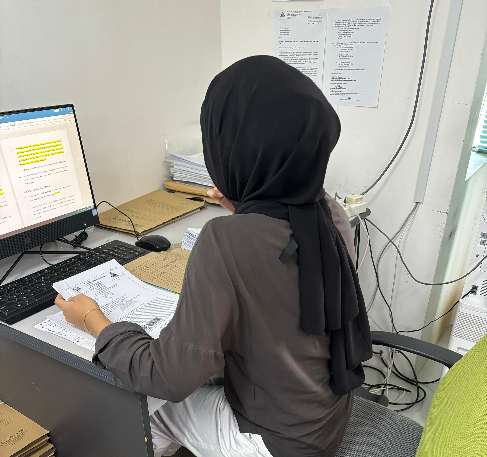
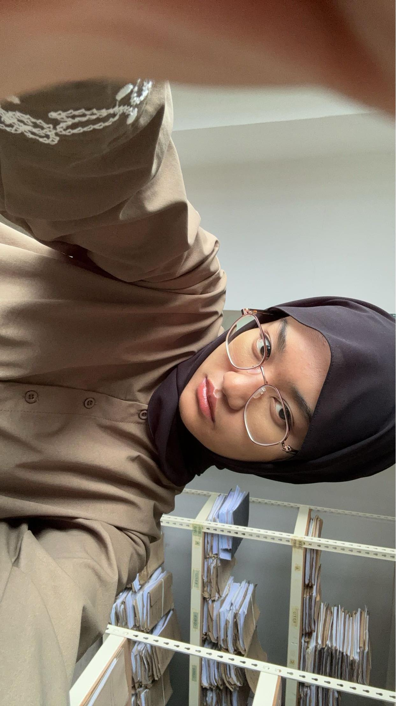
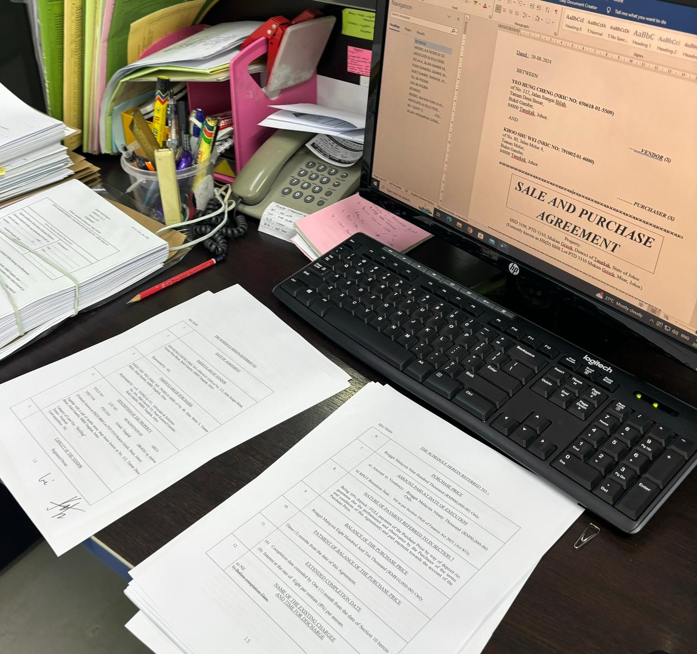
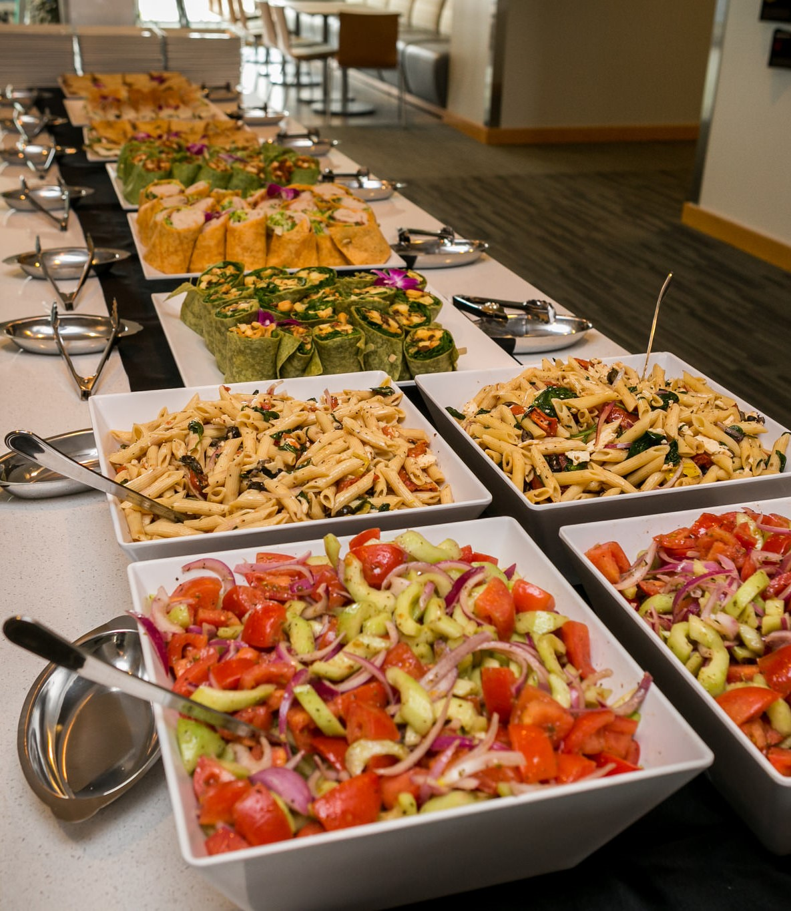

My Work Experience.

During my time working at Catering 7C, as a young teenager, I gained valuable hands-on experience in the food service industry. From the age of 15 to 16, over the course of approximately three to four months, I required to assist in food preparation, organized and maintained a clean workspace, and ensure customers received high-quality service.
It meant a lot because the catering business was owned by a close family friend who had worked with my father before in the navy. The connection gave the job a sense of trust and familiarity, and I approached the role with a strong sense of responsibility and determination to make the most of the opportunity.
I value this experience for the practical skills and personal growth it encouraged. It taught me that hard work, adaptability, and a positive attitude can lead to meaningful contributions in any workplace.